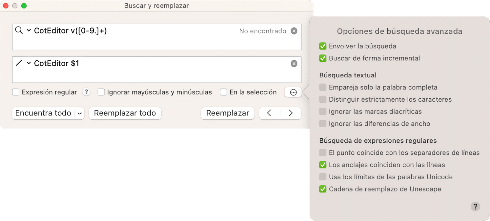

CotEditor tiene una potente función de búsqueda y reemplazo que también puede usar expresiones regulares.

Introduzca el texto a encontrar en el campo de búsqueda, el campo con un icono de lupa; e introduzca el texto para reemplazar en el campo de reemplazo, el campo con un icono de lápiz. Cuando el campo de reemplazo está vacío, los textos que coincidan se eliminarán.
Para insertar los siguientes caracteres especiales en los campos, utilice las siguientes combinaciones de teclas:
| Carácter | Combinación de teclas |
|---|---|
| Carácter de final de línea | Alt-Return |
| Carácter de tabulación | Alt-Tab |
Puede reutilizar las cadenas de búsqueda/reemplazo anteriores seleccionándolas al pulsar en el icono correspondiente de lupa/lápiz.
| Opción | Descripción |
|---|---|
| Expresión regular | Búsqueda con expresión regular. |
| Ignorar mayúsculas/minúsculas | Ignorar mayúsculas y minúsculas en la búsqueda. |
| En la selección | Buscar texto solo en el texto seleccionado. |
Puedes personalizar el comportamiento de búsqueda desde el panel de opciones de búsqueda avanzada. El panel de opciones de búsqueda avanzada se abrirá cuando haga clic en el botón (...) en la ventana Buscar y reemplazar.
| Opción | Descripción |
|---|---|
| Envolver la búsqueda | Busca desde el principio del documento si no hay coincidencia a partir del punto de inserción. |
| Buscar de forma incremental | Busca en el documento mientras escribes en el campo de búsqueda. |
Opciones para buscar cuendo la expresión regular esta deshabilitada.
| Opción | Descripción | Valor por defecto |
|---|---|---|
| Empareja solo la palabra completa | Restringir los resultados de la búsqueda a las palabras completas. | Off |
| Distinguir estrictamente los caracteres | Equivalencia exacta carácter por carácter. | Off |
| Ignorar las marcas diacríticas | La búsqueda ignora las marcas diacríticas (por ejemplo, ö = o). | Off |
| Ignorar las diferencias de ancho | La búsqueda ignora las diferencias de ancho en las formas de caracteres(por ejemplo, ａ = a). | Off |
Opciones para la búsqueda cuando la expresión regular está habilitada.
| Opción | Descripción | Valor por defecto |
|---|---|---|
| El punto coincide con los separadores de líneas | Permitir que . coincida con cualquier carácter, incluidos los caracteres de nueva línea (una sola línea). | Off |
| Los anclajes coinciden con las líneas | Permitir que ^ y $ coincidan con el inicio y el final de las líneas (multilínea). | On |
| Usa los límites de las palabras Unicode | Usa Unicode TR#29 para especificar los límites de las palabras | Off |
| Cadena de reemplazo de Unescape | Desvíe los metacaracteres con barra invertida en la cadena de reemplazo. | On |